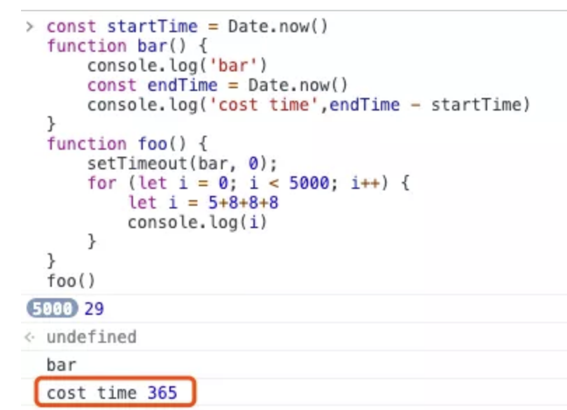
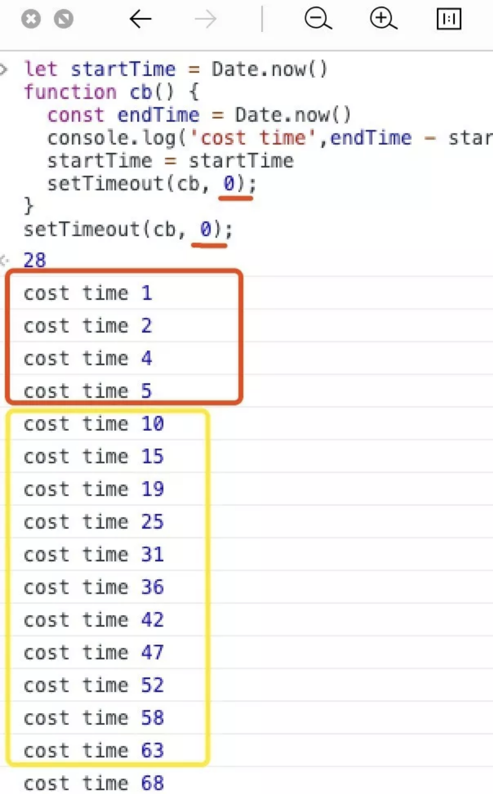
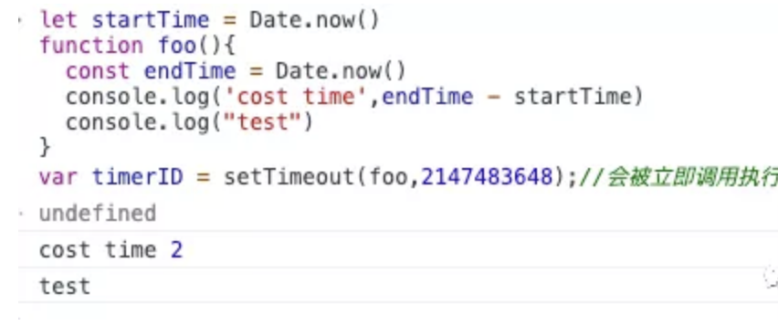

setTimeout，它就是一个定时器，用来指定某个函数在多少毫秒之后执行
# setTimeout用法
var timeoutID = setTimeout(function[, delay, arg1, arg2, ...]);
var timeoutID = setTimeout(function[, delay]);
var timeoutID = setTimeout(code[, delay]);
- 第一个参数为函数或可执行的字符串(比如
alert('test'),此法不建议使用) - 第二个参数为延迟毫秒数，可选的，默认值为
0. - 第三个及后面的参数为函数的入参。
setTimeout的返回值是一个数字，这个值为timeoutID，可以用于取消该定时器
# setTimeout在浏览器中的实现
- 浏览器渲染进程中所有运行在主线程上的任务都需要先添加到消息队列，然后事件循环系统再按照顺序执行消息队列中的任务。
- 在 Chrome 中除了正常使用的消息队列之外，还有另外一个消息队列(我们可以称为延迟队列)，这个队列中维护了需要延迟执行的任务列表，包括了定时器和 Chromium 内部一些需要延迟执行的任务。所以当通过 JavaScript 创建一个定时器时，渲染进程会将该定时器的回调任务添加到延迟队列中。
比如这样的一段代码：
function foo(){
console.log("test")
}
var timeoutID = setTimeout(foo,100);
当通过 JavaScript 调用
setTimeout设置回调函数的时候，渲染进程将会创建一个回调任务，包含了回调函数foo、当前发起时间、延迟执行时间等，其模拟代码如下所示
struct DelayTask{
int64 id；
CallBackFunction cbf;
int start_time;
int delay_time;
};
DelayTask timerTask;
timerTask.cbf = foo;
timerTask.start_time = getCurrentTime(); //获取当前时间
timerTask.delay_time = 100;//设置延迟执行时间
- 创建好回调任务之后，就会将该任务添加到延迟执行队列中。那这个回调任务，什么时候会被执行呢？
- 浏览器中有个函数是专门用来处理延迟执行任务的，暂且称为ProcessDelayTask，它的主要逻辑如下：
void ProcessTimerTask(){
//从delayed_incoming_queue中取出已经到期的定时器任务
//依次执行这些任务
}
TaskQueue task_queue；
void ProcessTask();
bool keep_running = true;
void MainTherad(){
for(;;){
//执行消息队列中的任务
Task task = task_queue.takeTask();
ProcessTask(task);
//执行延迟队列中的任务
ProcessDelayTask()
if(!keep_running) //如果设置了退出标志，那么直接退出线程循环
break;
}
}
其实就是，当浏览器处理完消息队列中的一个任务之后，就会开始执行 ProcessDelayTask 函数。ProcessDelayTask 函数会根据发起时间和延迟时间计算出到期的任务，然后依次执行这些到期的任务。等到期的任务执行完成之后，再继续下一个循环过程。这样定时器就实现了，从这个过程也可以明显看出，定时器并不一定是准时延后执行的。
# 注意事项
- 如果当前任务执行时间过久，会延迟到期定时器任务的执行
在使用 setTimeout 的时候，有很多因素会导致回调函数执行比设定的预期值要久，其中一个就是上文说到的，如果处理的当前任务耗时过长，定时器设置的任务就会被延后执行。
比如在浏览器中执行这样一段代码，并打印执行时间
function bar() {
console.log('bar')
const endTime = Date.now()
console.log('cost time',endTime - startTime)
}
function foo() {
setTimeout(bar, 0);
for (let i = 0; i < 5000; i++) {
let i = 5+8+8+8
console.log(i)
}
}
foo()
执行结果如图：

从结果可以看到，执行
foo函数所消耗的时长是365毫秒，这也就意味着通过setTimeout设置的任务被推迟了365毫秒才执行，而设置setTimeout的回调延迟时间是0
- 使用 setTimeout 设置的回调函数中的 this 环境不是指向回调函数
var name= 1;
var MyObj = {
name: 2,
test:1,
showName: function(){
console.log(this.name,this.test);
}
}
setTimeout(MyObj.showName,1000)
MyObj.showName()
//先输出 2 1
// 1s后输出 1 undefined
这里其实认真分析一下，也很好理解这个
this的指向。按照this的规定，如果是对象调用(obj.fn())，那么this指向该对象,因此MyObj.showName()输出的是MyObj里面的值。在setTimeout中，入参是MyObj.showName，这里是把这个值传了进去，可以理解为：
const fn = MyObj.showName
setTimeout(fn,1000)
这样看，在
setTimeout里面，当执行到的时候，实际上就是在window下执行fn，此时的this，就指向了window`,而不是原来的函数。
- setTimeout 存在嵌套调用问题
如果
setTimeout存在嵌套调用，调用超过5次后，系统会设置最短执行时间间隔为4毫秒。
我们可以在浏览器粗略测试一下，有如下代码：
let startTime = Date.now()
function cb() {
const endTime = Date.now()
console.log('cost time',endTime - startTime)
startTime = startTime
setTimeout(cb, 0);
}
setTimeout(cb, 0);

从结果可以看出，前面五次调用的时间间隔比较小，嵌套调用超过五次以上，后面每次的调用最小时间间隔是
4毫秒(我运行的结果，间隔基本是5ms，考虑有代码执行的计算误差)。
之所以出现这样的情况，是因为在
Chrome中，定时器被嵌套调用5次以上，系统会判断该函数方法被阻塞了，如果定时器的调用时间间隔小于4毫秒，那么浏览器会将每次调用的时间间隔设置为4毫秒。可以看下源码(https://cs.chromium.org/chromium/src/third_party/blink/renderer/core/frame/dom_timer.cc)
static const int kMaxTimerNestingLevel = 5;
// Chromium uses a minimum timer interval of 4ms. We'd like to go
// lower; however, there are poorly coded websites out there which do
// create CPU-spinning loops. Using 4ms prevents the CPU from
// spinning too busily and provides a balance between CPU spinning and
// the smallest possible interval timer.
static constexpr base::TimeDelta kMinimumInterval = base::TimeDelta::FromMilliseconds(4);
所以，一些实时性较高的需求就不太适合使用
setTimeout了，比如你用setTimeout来实现JavaScript动画就不一定是一个很好的主意。
- 未激活的页面，setTimeout 执行最小间隔是 1000 毫秒
如果标签不是当前的激活标签，那么定时器最小的时间间隔是 1000 毫秒，目的是为了优化后台页面的加载损耗以及降低耗电量。这一点你在使用定时器的时候要注意。
- 延时执行时间有最大值
Chrome、Safari、Firefox 都是以
32个bit来存储延时值的，32bit最大只能存放的数字是2147483647毫秒，这就意味着，如果 setTimeout 设置的延迟值大于2147483647毫秒（大约24.8天）时就会溢出，这导致定时器会被立即执行。如：
let startTime = Date.now()
function foo(){
const endTime = Date.now()
console.log('cost time',endTime - startTime)
console.log("test")
}
var timerID = setTimeout(foo,2147483648);//会被立即调用执行
执行结果：

运行后可以看到，这段代码是立即被执行的。但如果将延时值修改为小于
2147483647毫秒的某个值，那么执行时就没有问题了。